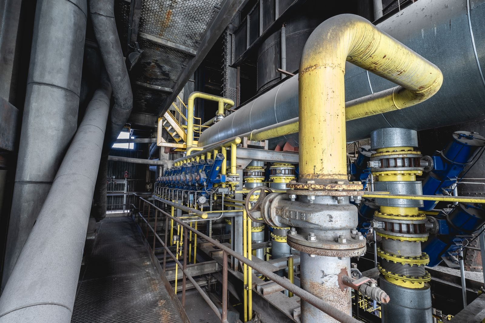
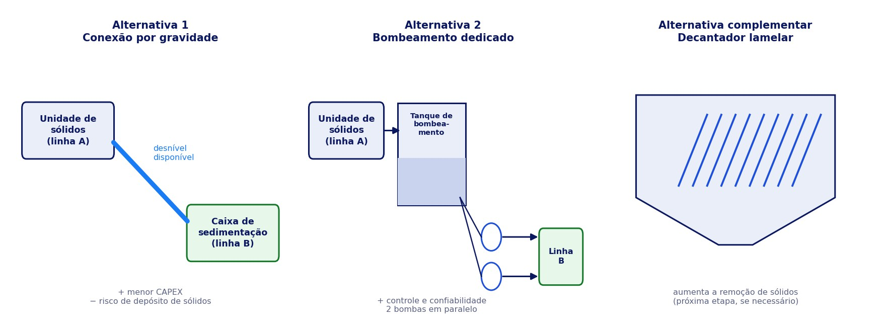
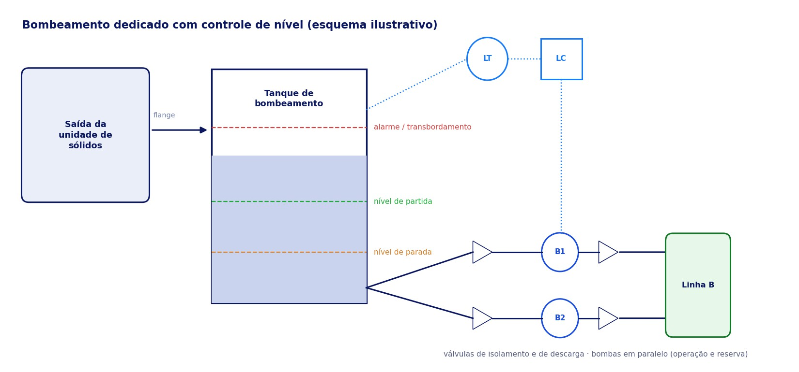
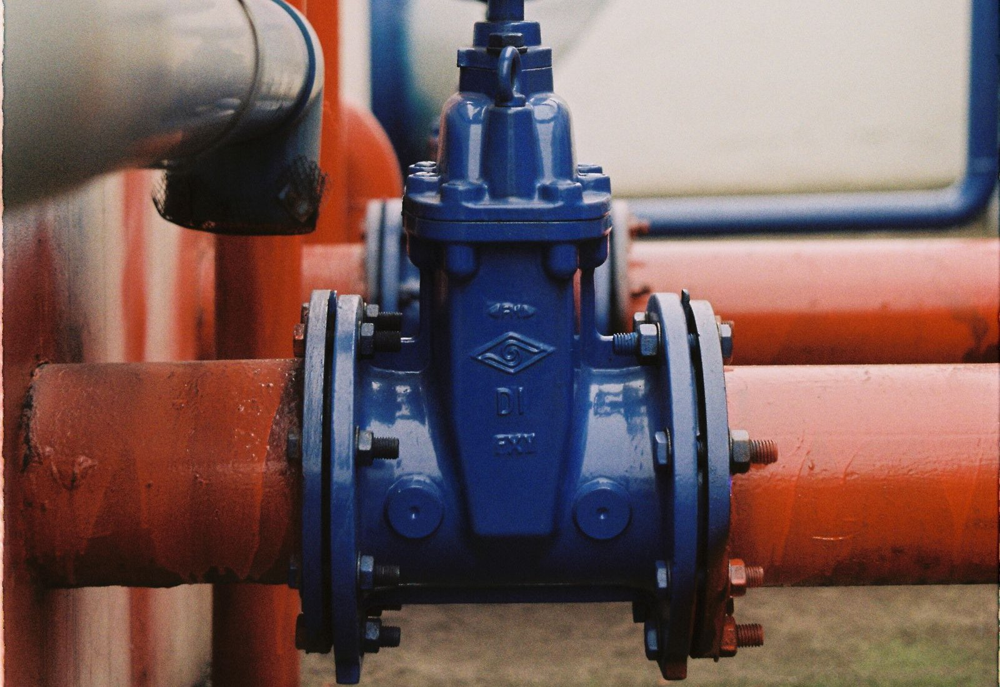
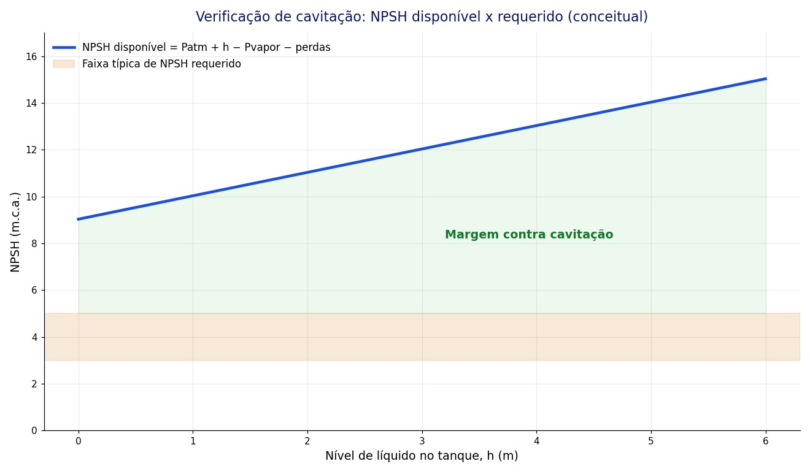
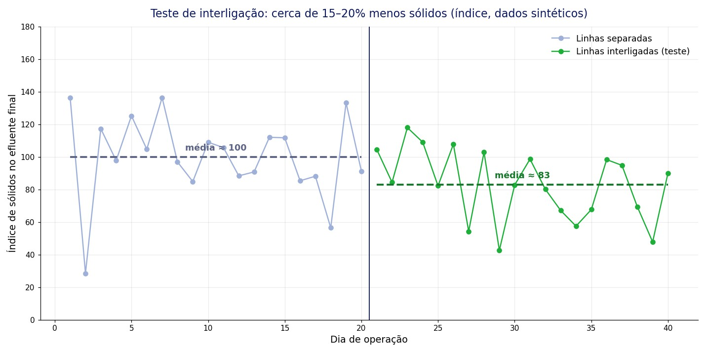
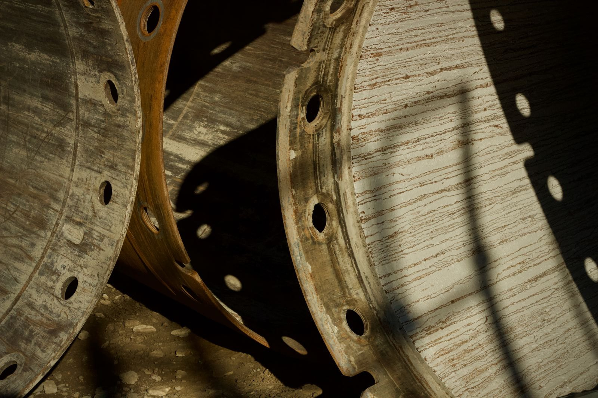

Problema / desafio do cliente
Em uma central de tratamento de efluentes no estado de São Paulo, uma linha que recebe efluentes com alta carga orgânica e muitos sólidos (fossas sépticas, caixas de gordura, banheiros químicos) descarregava sem uma etapa de sedimentação adequada, elevando os sólidos no efluente final.
A proposta era interligar essa linha à caixa de sedimentação de outra linha da planta. A condição indispensável era que a interligação não afetasse nem trouxesse riscos à unidade de remoção de sólidos existente, respeitando a segurança operacional e as condicionantes do licenciamento ambiental.
Contexto e características do processo
- O fluido tem densidade variável, muitos sólidos em suspensão e partículas de maior granulometria, o que aumenta o risco de depósito e entupimento da tubulação.
- A unidade de compactação de sólidos da linha foi substituída durante o projeto; na transição, as duas linhas foram interligadas provisoriamente para manter o tratamento.
- Relatórios anteriores da GETA e dados operacionais apontavam a remoção de sólidos como prioridade.

Diagnóstico e dados analisados
Foram avaliadas três alternativas, sob critérios hidráulicos, operacionais, ambientais e econômicos:
- Conexão por gravidade: aproveita o desnível existente e tem o menor custo. Porém, as perdas de carga em acessórios e as variações de operação exigem uma carga hidráulica que o sistema não oferece com folga, e a velocidade pode não ser suficiente para manter os sólidos em arraste, com risco de depósitos e obstrução.
- Linha com bombeamento dedicado: garante a vazão e velocidades compatíveis com o transporte de sólidos, com maior controle e confiabilidade.
- Decantador lamelar complementar: aumentaria a remoção de sólidos, mas o equipamento orçado não atendia à vazão e à alta carga de sólidos previstas, e por isso ficou fora do investimento desta etapa.

Metodologia utilizada
- Análise dos relatórios anteriores e dos dados operacionais de sólidos e fenóis no efluente final.
- Avaliação hidráulica da conexão por gravidade: cotas, perfil do coletor, perdas de carga e velocidade de arraste.
- Concepção do sistema de bombeamento dedicado com controle de nível e diagrama de integração.
- Seleção da bomba e verificação de NPSH para evitar cavitação, com definição dos níveis de controle.
- Cálculo estrutural preliminar do tanque de bombeamento em fibra de vidro e desenho técnico para fabricação.
- Estimativa de CAPEX por fatores sobre o custo dos equipamentos e cronograma executivo.
- Validação operacional com as linhas interligadas provisoriamente.
Solução de engenharia desenvolvida
A alternativa de referência é uma linha com bombeamento dedicado, da saída da unidade de sólidos até a caixa de sedimentação da outra linha:
- Tanque de bombeamento em fibra de vidro, com flanges de entrada e saída.
- Duas bombas centrífugas em paralelo (operação e reserva), com rotor do tipo vortex, mais tolerante a sólidos e com menor risco de obstrução.
- Controle de nível por transmissor de pressão diferencial e controlador atuando diretamente nas bombas, com níveis de partida, parada, alarme e proteção contra transbordamento.
- Válvulas de isolamento das bombas e de descarga na linha receptora.

Estratégia de implantação em etapas: começar pela solução de menor investimento e menor complexidade; caso surjam obstruções ou acúmulo de sólidos, migrar para o tanque de bombeamento, com cerca de dois meses de validação; se ainda assim a carga de sólidos não ficar dentro dos limites, avaliar o decantador lamelar como etapa seguinte, também com período de testes.
Tecnologias e processos envolvidos
- Hidráulica de escoamentos com sólidos: perdas de carga, velocidade mínima de arraste e risco de sedimentação em tubulações.
- Bombas centrífugas com rotor vortex, adequadas a fluidos com alta concentração de sólidos.
- Instrumentação e controle de nível com transmissor de pressão diferencial e lógica de partida e parada automáticas.
- Tanques em fibra de vidro (PRFV), resistentes à corrosão.

Modelagem, simulação e ferramentas computacionais
- Ponto de operação da bomba a partir da curva de desempenho (vazão, altura manométrica e potência).
- NPSH disponível x requerido para diferentes níveis do tanque: a margem contra cavitação é ampla, e os níveis de controle foram definidos para proteger o equipamento e evitar o funcionamento a seco.
- Cálculo estrutural do tanque: pressão hidrostática, espessura equivalente de parede cilíndrica e correção para paredes planas, resultando em espessuras práticas de fabricação com fator de segurança.
- Análise dos dados de validação antes e durante a interligação provisória.

Resultados obtidos
- No teste com as linhas interligadas, a concentração de sólidos no efluente final caiu cerca de 15 a 20% em relação à operação normal, mesmo sem otimizar o bombeamento.
- O efeito está associado às características hidráulicas da caixa de sedimentação e ao chorume da linha receptora, que atua como agente coagulante e favorece a agregação das partículas.
- A interligação se mostrou uma medida de baixo investimento com ganho imediato na qualidade do efluente; com o bombeamento definitivo, espera-se uma remoção ainda maior.
- Engenharia, especificações e cotações concluídas, com cronograma de cerca de 3 a 4 meses para as etapas restantes.

CAPEX/OPEX e análise técnico-econômica
O investimento do bombeamento dedicado foi estimado a partir do custo dos equipamentos principais, com fatores percentuais usuais para projetos industriais:
| Componente | Participação aproximada no CAPEX |
|---|---|
| Equipamentos principais (tanque, bombas, instrumentos, válvulas e flanges) | cerca de 65% |
| Instalação mecânica | cerca de 10% |
| Infraestrutura elétrica | cerca de 8% |
| Automação e instrumentação | cerca de 6% |
| Tubulação hidráulica | cerca de 9% |
As bombas representam a maior parte do custo dos equipamentos. O investimento pode ser reduzido com o uso da equipe interna do cliente na montagem e de equipamentos disponíveis em estoque. A conexão por gravidade tem o menor CAPEX, e o OPEX do bombeamento envolve energia elétrica, manutenção das bombas e instrumentos e mão de obra operacional.
Escopo e responsabilidades da GETA
A GETA atuou na supervisão técnica do projeto, sendo responsável por:
- análise técnica das alternativas de interligação;
- concepção do sistema de bombeamento e do controle de nível;
- cálculos hidráulicos (NPSH e ponto de operação) e estruturais do tanque;
- estimativa de investimento e cronograma executivo;
- acompanhamento e análise da validação operacional;
- avaliação técnica do decantador lamelar com o fornecedor.
Principais entregáveis
- Relatório de interligação entre linhas: opções, custos e cronograma.
- Diagrama de integração do sistema de bombeamento.
- Memorial de cálculo hidráulico (ponto de operação, NPSH e níveis de controle).
- Cálculo estrutural e desenho técnico do tanque para fabricação.
- Lista de equipamentos com estimativa de custos e CAPEX.
- Cronograma executivo e estratégia de implantação em etapas.
- Análise da validação operacional da interligação.
Galeria

Fotos ilustrativas de banco de imagens (Pexels), esquemas simplificados e dados sintéticos, preservando a confidencialidade do cliente.